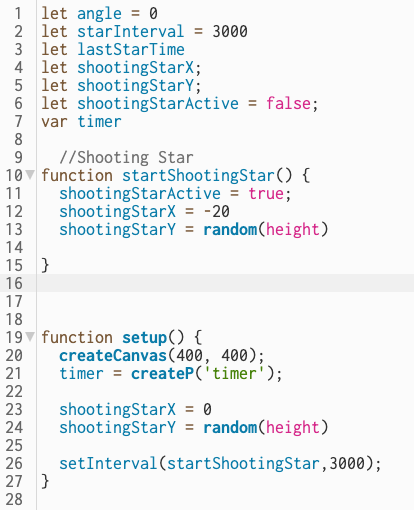
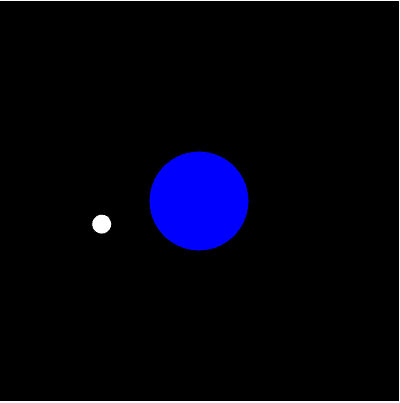
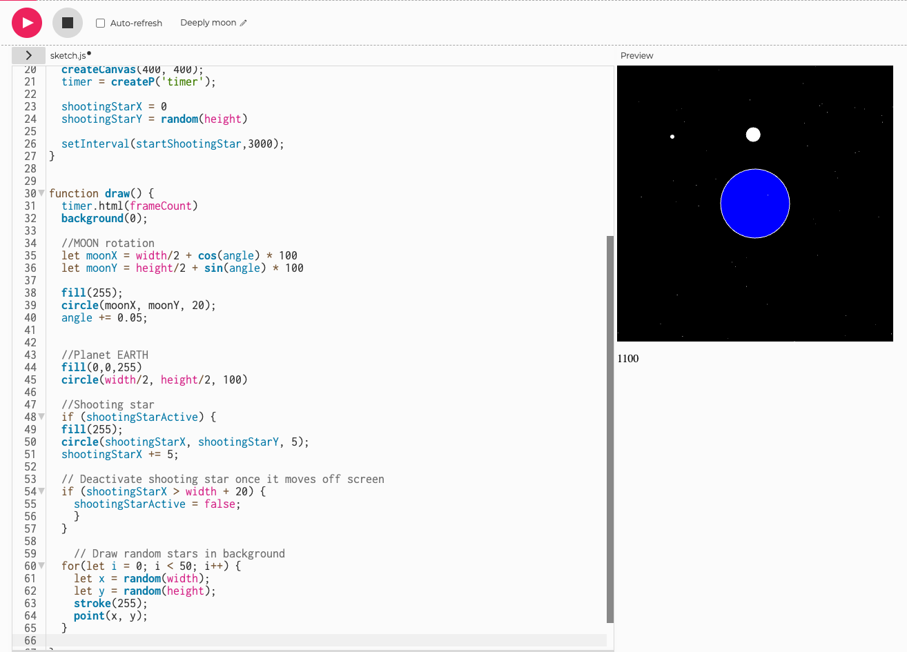
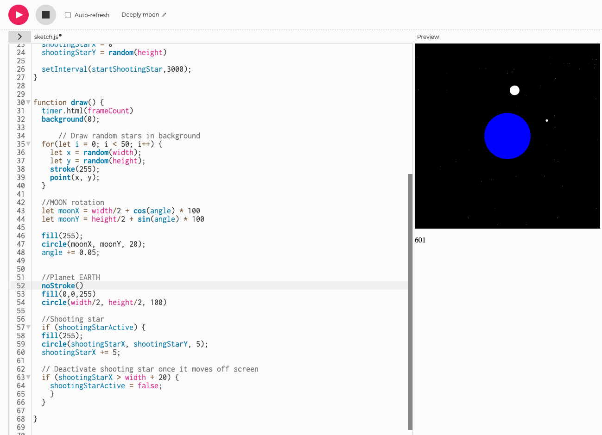
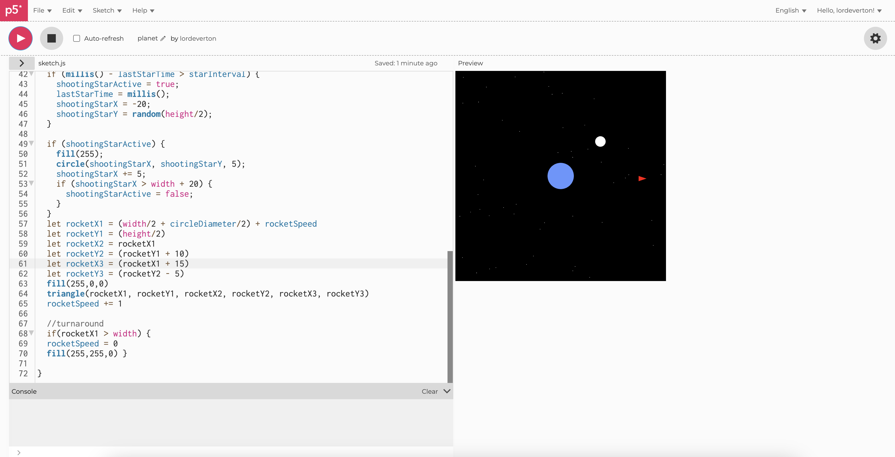
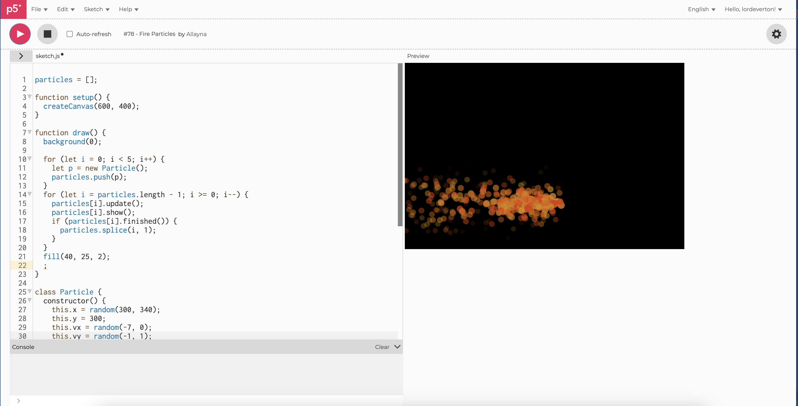

- After playing around with the millis() function to fire a shooting star every 3 seconds, I came across the setInterval function that simplifed the code.
- The setInterval function requires a function that you want the code to run and an interval, measured in milliseconds.
- To get this working, I had to create a function called startShootingStar() which initialized the X and Y positions and a enabled/disabled variable.
- Then, in the code, if the function was "active" then a circle will be drawn and the X position will increment by 5 pixels, which showed the star moving.

- After getting the main components of the moon and shooting star, I wanted to make the blue dot appear more like Earth.
- So, I added some green shapes and adjusted the blue to make it appear more Earth-like. Definitely some improvements to be made here.

- I used the strategy of adding a for loop in a for loop to create the "sparkling" stars.
- This creates 50 stars in random positions.

- This also created a stroke around Earth.
- The stroke from the stars gets applied to all shapes, so I called the noStroke() function before drawing the planet Earth.

- This is where I was experimenting with the rocket turning around after it hit the end of the image

- I found someone's fire effect that could be an interesting effect for the "rocket", so I decided to play with the positioning and size and import it to my project
- Adjusting the class X and Y position, and flipping the VX and VY to the opposites and turning one of them negative made the fire disperse from left to right, instead of bottom to top.